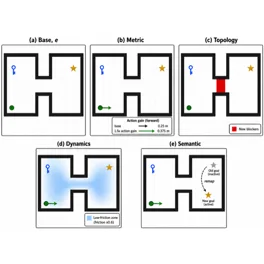
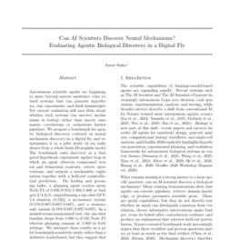
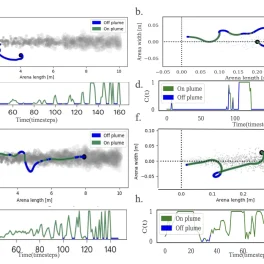

Hi, I'm Aarav. I'm highly interested in how the brain works, how we can replicate its mechanisms through
computation, and the insights into neuroscience we can glean from this replication.
I'm currently a researcher at Johns Hopkins University in the
Dynamical Intelligence Group studying the computational theory of predictive grid cells in the medial entorhinal cortex (MEC),
and a computational neuroscientist at Eon Systems PBC working on embodied Drosophila brain models, with our goal being to one day replicate human consciousness.
Previously, I was a summer researcher at Harvard University's Kempner Institute training RNN agents for odor plume tracking, and a student research assistant at the UC Davis Center for Neuroscience.
I'm a sophomore at Tompkins High School in Katy, Texas, where I'm ranked 5th out of 800+ students with a 4.0 GPA. I'm also a USACO Gold competitor, a Science Olympiad state medalist, and the founder of my school's AI Club and Engineering Club.
Research
I'm passionate about computational neuroscience, connectomics, embodied neural models, and deep reinforcement learning. My work focuses on understanding how biological neural circuits give rise to behavior, using both data-driven simulations and biologically inspired AI agents.

Aarav Sinha
ICML 2026 RLxF Workshop: Reinforcement Learning from World Feedback, 2026 — Accepted workshop paper; 40% acceptance rate
PDF·
Workshop·
CFP
An executable benchmark for controlled post-intervention evaluation of embodied world models. MapShift separates stale map reuse, belief update, and post-change planning across matched environment interventions.

Aarav Sinha
ICML 2026 GenBio Workshop: Generative and Agentic AI for Biology, 2026 — Accepted workshop paper
PDF·
Workshop·
CFP
A pilot benchmark for agentic biological discovery in a digital fly, casting mechanism discovery as a budgeted hypothesis-experiment-update loop with held-out counterfactual predictions.
Aarav Sinha
Research Square Preprint, 2026
PDF·
DOI
A theory of communication-constrained recurrent credit assignment on cortical graphs, deriving graph-spectral lower bounds for low-bandwidth diffuse and cell-type-specific feedback.

Aarav Sinha, Satpreet H. Singh
NeurIPS AI for Science Workshop, 2025
OpenReview
We use deep RL to train biologically inspired RNN agents to navigate to odor sources, comparing walking and flying modes. Walking agents develop fine-scale orientation strategies and compact neural representations, while flying agents use broad sweeping turns with higher-dimensional dynamics.
Scott Harris, Aarav Sinha, Susanna Yaeger-Weiss, Vincent Louvel, Philip Shiu
Society for Neuroscience (SfN), 2025 — Poster
PDF
A connectome-constrained Drosophila brain model that accurately predicts neural activity and controls behavior in a virtual environment. I contributed to the brain embodiment component of the project at Eon Systems, whose embodied fly emulation later reached 100M+ views online.
Beyond research
-
Violinist
Off the screen, I play the violin.
-
Anime lover
A dedicated watcher — Death Note is a forever favorite.
-
Matcha maker
And I make a serious bowl of matcha.
Academic CV
View my full academic CV
A complete record of my research, experience, publications, awards, and academic activities.
View CV
Mailing List
Stay updated
Get an email when I publish a new blog post or share a major project update.